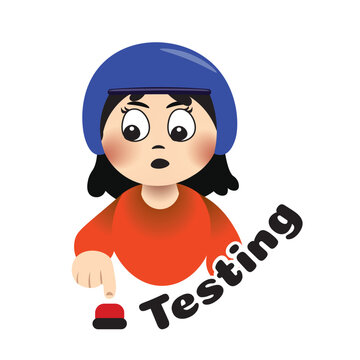

Manual Testing
Manual testing is the process of checking software manually without using automation tools.

Manual testing is the process of checking software manually without using automation tools.
Automation testing uses scripts and tools to execute tests automatically.
API testing checks how software systems communicate and exchange data.
Regression testing checks whether existing functionality still works after changes are made.